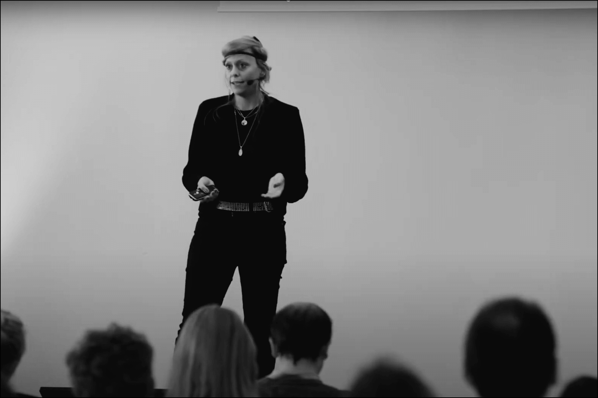

Jessica Böhme is the founder and director of IPeP. Her passion is to empower individuals and organizations to take action towards more socialecologically just, regenerative futures by living a philosophical life.
In her work and research for the past 10+ years, she aims to grasp the big picture by exploring relational approaches to inner and outer transformation across various disciplines. With a diverse educational background including a PhD in social science, a Master’s in sustainability management, and a Diploma in mechanical engineering, she has acquired deep knowledge about systems change and strategies for transforming complex systems. Her expertise lies in utilizing practical philosophy as a meta-technology for driving such change.
As a writer and author of three books, she is also the creator of a weekly newsletter titled „Rewilding Philosophy.“ She deliver keynotes and workshops on topics related to resilience, simplicity, the power of individual action, and understanding complexity all in the context of the Anthropocene.
Additionally, in her role as a university professor, she endeavores to integrate these subjects into MBA programs.
„Philosophy was a mode of existing-in-the-world, which had to be practised at each instant, and the goal of which was to transform the whole of the individual’s life.“ Pierre Hadot
BACKGROUND
There are no easy solutions to the complex, interrelated challenges of the metacrisis. The metacrisis encompasses multiple crises such as global warming, social inequalities, scarcity of resources, species extinction, ocean acidification, increasing rates of depression, unpredictable technologies, post-truth rivalries, as well as an increasing divide within society. All these crises are characterized by volatility, uncertainty, complexity and ambiguity (Schellnhuber, 2002) and can be understood as wicked problems (Pryshlakivsky and Searcy, 2013).
The challenge of wicked problems is that they have no clearcut solutions. Traditional approaches that focus on “outer transformation” such as technologies, policies, or infrastructures, have their limitations because they ignore the deeper philosophical underpinnings of the problems. Some (e.g. Akomolafe, 2023) argue that the way we address the crisis is the crisis.
Scientists from various disciplines therefore increasingly emphasize that an exclusively outer transformation is insufficient, and that an inner, philosophical transformation is necessary for regenerative futures (Böhme et al. 2022; Ives et al. 2019). Philosophies underlie deep, systemic structures, mechanisms and changes and can thus be both a barrier to or driver to overcome the challenges of the metacrisis (Escobar 2017; Orr 2002).
To address inner transformation, we can built on practical philosophy. Practical philosophy has always been concerned with how we can train our philosophies in a practical and real-life way (Hadot 1995). Unlike medicine, law, or science, which provide concrete answers, practical philosophy encourages us to grapple with the unknown and to question our own assumptions. It brings to the centre the cultivation of individual and collective virtues for individual, societal and environmental regeneration (Caniglia et al. 2023).
Philosophy is the inquiry into our understanding of reality, knowledge, and how we should live. As we assemble thoughts into coherent belief systems, we are essentially crafting philosophical frameworks. Similarly, when we discern between what is deemed good or bad, we draw upon philosophical foundations. How we design products, processes, or systems, depends on our philosophy. Philosophy is an inescapable facet of conscious experience, encompassing all dimensions of our understanding. Even to critique philosophy necessitates employing philosophical reasoning, a phenomenon known as the „performative contradiction”. Originating from ….philosophy.
While our perceptions often associate philosophy with abstract theoretical discourse, ancient philosophy transcended mere intellectual exercise to become a way of life. For philosophers like Seneca, philosophy served as a guide to action rather than idle discourse. For him it was about practical application over theoretical speculation. He said that “philosophy teaches us to act, not to speak.” Genuine philosophical knowledge was measured not solely by intellectual prowess but by its integration into one’s daily existence, manifesting as a fusion of truth and personal embodiment (Hadot 1995). This translation of the theoretical into the practical and back requires persistent training (this is what we prepare for at the PhilosophyGyms). As the late Ludwig Wittgenstein said about philosophy as a “form-of-life”: “The work in philosophy is really more a working on oneself” (De Miranda 2023).
Practical philosophy is a transformative, and largely overlooked, meta-technology.
Currently, there is a lack of addressing these inner dimensions in sustainability approaches – especially in institutions – be it universities, schools or workplaces. There are no spaces, where such capacities can be practiced – except privately. What is lacking are institutionalised offerings where people can practice cultivating a philosophy collectively (Caniglia et al. 2023).
The goals of the IPeP are therefore:
- Enhancing philosophical health as a complement to psychological and physiological well-being.
- Facilitating the integration of inner (philosophical) dimensions to foster regenerative futures, supplementing technological, organizational, and political solutions.
- Mainstreaming the significance of practical philosophy in addressing the underlying causes of the metacrisis.
- Establishing a robust framework for practical philosophy and its role in shaping regenerative futures through peer-reviewed publications.
- Providing a philosophical groundwork to support multispecies citizenship.
- The overarching aim of IPeP is to foster ecophilosophical health by helping people find, choose and live an ecophilosophy.
REFERENCES
Akomolafe B (2023). How do we respond to crisis? [https://www.bayoakomolafe.net/post/how-do-we-respond-to-crisis] retrieved on March 1st, 2023.
Böhme J (2023). Inner and outer transformation in the anthropocene: A relational approach. Leuphana Universität Lüneburg, Universitätsbibliothek der Leuphana Universität Lüneburg.
Caniglia, G., Freeth, R., Luederitz, C. et al. (2023). Practical wisdom and virtue ethics for knowledge co-production in sustainability science. Nat Sustain 6, 493–501. https://doi.org/10.1038/s41893-022-01040-1
De Miranda L (2023). Philosophical Health: Thinking as a Way of Healing (Re-inventing Philosophy as a Way of Life). Bloomsbury Publishing.
Escobar A (2017). Designs for the pluriverse: radical interdependence, autonomy, and the making of worlds. Duke University Press Books, Durham, NC.
Hadot P (1995). Philosophy as a way of life. Blackwell Publishers Ltd.
Ives C, Freeth R, Fischer J (2019). Inside-out sustainability: The neglect of inner worlds. Ambio. 49:208–217
Orr DW (2002). The Nature of Design – Ecology, Culture, and Human Intention, Oxford University Press.
Pryshlakivsky, J., Searcy, C. (2013). Sustainable Development as a Wicked Problem. In: Kovacic, S., Sousa-Poza, A. (eds) Managing and Engineering in Complex Situations. Topics in Safety, Risk, Reliability and Quality, vol 21. Springer, Dordrecht. https://doi.org/10.1007/978-94-007-5515-4_6
Schellnhuber HJ (2002). Coping with Earth System Complexity and Irregularity. In: Challenges of a Changing Earth. Steffen W, Jäger J, Carson DJ, et al. (eds). Heidelberg: Springer.